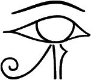
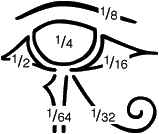

The Utchat
This page was deleted accidentally recently, and has had to be rewritten
from memory. I no longer have all the references to hand, so it may be a
little vague in places
What is the Utchat?
Legends of the eye
Links

What is the Utchat?
The utchat, also called the wadjet, ouadjit, eye of Ra
or Eye of Horus (above) is an ancient Egyptian symbol. There is
considerable disagreement about what it represents. Sometimes it is a left
eye and sometimes a right eye, sometimes it is said to represent the sun
and sometimes the moon, and sometimes an abstract symbol representing both.
Some authorities state that the utchat represents the sun when it is a
right eye and the moon when it is a left eye
[10][11][12].
It has also been claimed that the utchat is formed from the hieroglyphs
for the fractions 1/2, 1/4, 1/8, 1/16, 1/32 and1/64, giving a total of
63/64, as in the picture below:

Thanks to slateboard for this[13]
The utchat has also been described as a heavily made-up eye with a
symbolic beard and ostrich plume beneath it (can’t remember my source here, sorry). The utchat is a very stylised image, these theories are not mutually exclusive.
Here is my opinion:
Primarily the utchat represents the eye of a falcon. Peregrine falcons
(and several other species of falcon) have dark markings under their eyes
which vaguely resemble the markings of the utchat. Ra and Horus (both sun
gods) and Khonsu or Khons (a moon god), were all portrayed with the heads
of falcons.
However, I would also like to point out that the craters
(or more correctly Mare) of the full moon, closely resemble the utchat
(click here to see what I mean, and
here for more images seen in the moon).
This is not very obvious in temperate latitudes, because here the
northern pole of the moon is generally uppermost, whereas the utchat is
best viewed when the western side of the moon is uppermost. In tropical
and subtropical latitudes (up to about 30 degrees north or south of the
equator, and including Egypt), the moon will at certain times be directly
overhead, so it can be seen from almost any angle. Here the crescent moon
will appear "U shaped" as often as it is "C shaped", and so as the moon
goes through it’s phases, it will resemble an eye blinking.
I recently saw an interesting brooch made by the artist Malcolm Appleby, which I think may have been inspired by the utchat.
The badge of the Birmingham Lunar Society was a single eye. This is widely believed to be a masonic symbol, although Freemasons deny this.[top]
Legends of the eye
Legends that the sun and moon are eyes of a sky god are quite common.
In the ancient Egyptian Book of the Dead there is a passage in which Ra
gazes into Horus’ eye to divine the future, and then directs Horus to look
at a black pig. Horus sees only a white pig, but then looks a second time and sees a black pig, with his enemy Set standing beside it. As soon as he sees Set, he is blinded in one eye (the papyrus of Ani does not
include this passage) [11]
In one legend, Ra donates one of his eyes to Horus to replace the one which had been blinded. In another legend, one of Ra’s eyes escapes from
his face and roams the desert as the lioness headed-goddess Sekhmet,
possibly representing the burning, destructive heat of the midday sun.
Ra gets another eye to replace the lost eye, but this enrages Sekhmet.
Eventually Ra places her on his forehead as a third eye*.
In Norse legend, Odin undergoes a series of adventures in his quest
for wisdom. These include stealing the mead
of poetic inspiration and hanging himself from the world tree
Yggdrasil to learn the secrets of the dead.
In another adventure, Odin tries to drink from the well of the giant
Mimir (whose name means "memory"). Mimir demands payment, and Odin
plucks out one of his eyes and offers it to Mimir, in return for a
drink. The eye is cast into the well. Odin returns from these adventures with the gift of poetry, wisdom and the runes, an alphabet and aid to memory for poets. Odin was usually portrayed as an old man with grey hair (representing
the clouds) and a blue cloak (representing the sky). His single eye
was believed to represent the sun. [2][6].
When Horus lost his eye, he became known as "Horus dwelling in blindness" and in this guise he was identified with Thoth
[8]. Thoth was the god of
hieroglyphics.
Odin is generally imagined to have plucked out his right eye,
which is strange because the right eye is commonly associated with the sun
and the left with the moon**. It is widely believed that
the left side of the brain (linked to the right eye) controls rational
thought and written language, whereas the right side of the brain (linked
to the left eye) controls artistic and poetic thought. This is of course
highly dubious pop-psychology, and psychologists regularly attempt to
debunk this idea.
In the ancient world, poets (like Homer) were blinded, if they were not
already blind, to ensure that they would commit all of their poems to
memory, rather than writing them down. Perhaps the legend is saying that
Odin receives the runes and the gift of poetry, and compromises by
becoming half blind, but it is also extremely tempting to link the legend
to theories about the two halves of the brain, or to legends of the sun
and moon as eyes. Apollo, the Greek god of poetry was a sun
god***, and Bragi, the Norse god of poetry was
sometimes called "the light of his father's (Odin's)
eye"****.
The craters of the moon resemble the utchat as a right eye, but in Egypt, the moon was imagined as a left eye.
In Japanese legend, the god Izinagi descends, like Orpheus, into the underworld to seek his beloved Izinami. When he finds her, she is monstrous to behold, and he flees in terror. When he reaches the mortal world, he washes the tears from his eyes. The sun is formed from the drops of water from his left eye and the moon from drops of water from his right eye (I think I've got this right!)
[3].
Shinto priests considered it unlucky to look at the moon directly,
and would always use a mirror.
The image of the reflected moon is widespread in myth and folklore.
Buddhists meditate upon it. The moonrakers,
Brer Rabbit and the
Tibetan monkeys grasped at it in vain.
Odin's eye lying at the bottom of the well, could represent a reflection
of the moon, or maybe the moon was imagined to be a reflection of the
sun? Are these legends about donation of eyes, and reflection of eyes
meant to explain why the sky god appears to have two right eyes?
I'll admit it, I'm stumped, but I'd like to think I'm on the right
track
. The dark part of the eye, and a schoolchild are both called pupils,
because when you look in a mirror, you see the reflection of a small
person, (your own reflection) in your eye.
The moon is more commonly imagined to inspire poetry than the sun.
Robert Graves.[9] claimed that the
cult of Apollo had gained power over the centuries, and along the way,
Apollo came to supplant the lunar muse to become the god of poetry.
Tom Robbins [4] confidently states
that poetry is lunar while journalism is solar, which is why there are so
many newspapers around the world called "The Sun", but none called
"The Moon".
The Minyong people of northern India have the following creation legend:
The sun and the moon were originally two sisters called Bong and Bomong. In the beginning they both radiated equal amounts of light and heat as they travelled across the sky. This caused problems, because the plants
and animals had no respite from the continual heat. Eventually a
frog shot Bomong, the moon, with an
arrow, allowing the earth to cool down at night. Bong was so upset by
her sisters death that she hid herself away and pined to death. The nurse
of the two girls also died of grief, and the world was plunged into
darkness. A carpenter exhumed the corpse of the nurse, and saw Bong
and Bomong still reflected in her eyes. This enabled him to carve
effigies of Bong and Bomong, which he sent to travel across the sky
as the sun and moon. (I think I've remembered this correctly,
I don't have my source to hand at the moment)
[3].
Mythology of the Soul[1]
is a book about artwork produced by a group of mental patients, and the
mythological symbols contained within the pictures. One of the patients
repeatedly used the image of donation of an eye in his pictures.
The Brahan Seer (a semi-mythical Scottish Nostradamus) was said to have
gained his powers when he obtained a magic crystal or maybe a stone with
a hole through the middle. The first time he looked through the stone,
he was blinded in one eye (but which eye?!), and from then on he could
see the future by holding the stone up to his blind
eye[14])
Culpeper wrote the following in his Complete Herbal:
"The eyes are under the Luminaries; the right eye of a man, and the left eye of a woman the Sun claims dominion over: the left eye of a man, and the right eye of a woman, are privileges of the Moon, Wormwood, an herb of Mars cures both;"
His entry on Wormwood, descends into a prolonged rant about astrologers and his fellow doctors and herbalists. I get the impression that some of it may be ironic. Hard to tell though.[top]

*This legend may provide evidence that the sun was once imagined to be feminine. In German, the word for sun is a feminine noun.
Allerleirauh is a fairy tale about of a Princess, who seems to represent the sun, the moon and the stars. She also has a star on her forehead, like a third eye.
In the early versions of the story of "Little red riding hood", the girl is actually swallowed whole by the wolf, and then rescued alive and well when the wolf is killed and cut open. This sounds a lot like an eclipse legend, with red riding hood
representing the sun. Contrary to popular belief, the moon is not exclusively feminine and the sun is not always masculine in myth. However, the theme of being swallowed whole by a monster occurs in many legends and stories: Hercules, Jonah, Jason (according to an ancient vase painting), Osiris, Pinocchio, The Empire Strikes Back etc. Some of these may be distorted legends about sun-deities and eclipses, but there are other interpretations, and it may
simply be a dramatic element picked up and passed on by story tellers with
no symbolic meaning whatsoever. J.R.R.Tolkien compares story telling to
making a stew, and says that there is no point trying to identify the
ingredients, or reassemble the bones to identify the creature that
went into it[5].
I don't entirely agree with this. Tolkien borrowed ideas from Greek,
Norse and Finnish myth to write The Silmarillion.
Returning to the Star Wars trilogy (or should that be sextilogy?): while Luke is confronting his most primal fears inside the hollow tree/cavern, Han and the others are inside the belly of a monster. The two scenes mirror each other. One parodying the other. Han is becoming increasingly ridiculous, like Kai, Theseus and other ageing heroes. The time has come for him to be knocked off his pedestal. Pretty soon he will have to be rescued, like Theseus or Peredur, from the [criminal] underworld. Or maybe not. I'm probably paying too much attention to the bones rather than the stew.[back]
**One interpretation of the legend goes as follows:
Odin’s single eye is the sun. He plucks it out and casts it into the well,
representing the sun setting into the western ocean. When Mimir drinks
from the well, this represents the sunrise[2]
I am not satisfied with this. How did Odin lose his other eye? Surely
the purpose of the legend is to explain why Odin has only one eye?
Nowhere do the legends say that Odin was ever totally blind.
[back]
***Have you ever wondered why the first craft to travel to the moon was named after a sun god? Surely Diana or Selene would be more appropriate than Apollo.I suppose it is because Apollo was the god of Science and technology, but Richard Hoagland has a stranger theory (link below). My only comment on this theory is that any mythical link between Apollo and Orion must be very tenuous indeed.[back]
****An Egyptian legend says that mankind was born from the eye of Ra. The ancient Egyptian words for "tears" and "men" are quite
similar[back]
Back to main page
Back to bees
Back to curious correspondence
Back to making moondials
Back to the Man in the Moon
Back to Introduction
Links to other sites on the web
John F.Kennedy's "Grand NASA plan"
Why the moon launch was called Apollo, by Richard Hoagland
The Proto-religion Homepage
The sun and moon as eyes and other early myths
Allerleirauh
German Fairy Tale about a shape-shifting Cinderella-type heroine.
Reclaim the sun
All about sun goddesses
More about Sekhmet[top]